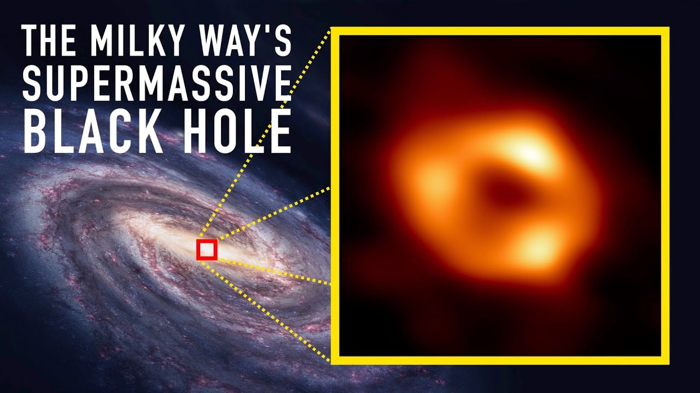
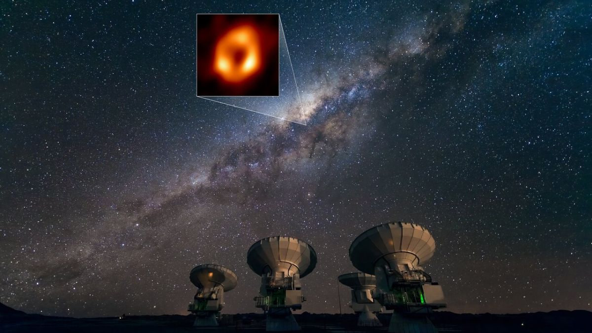
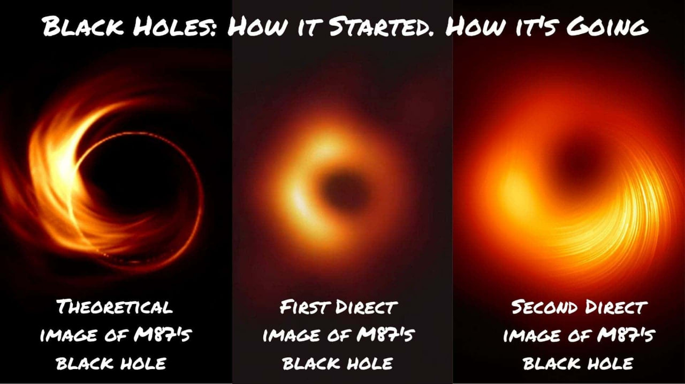
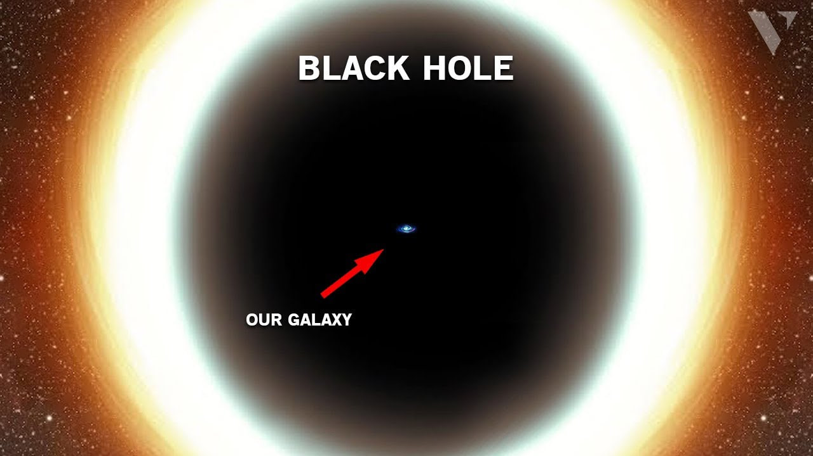
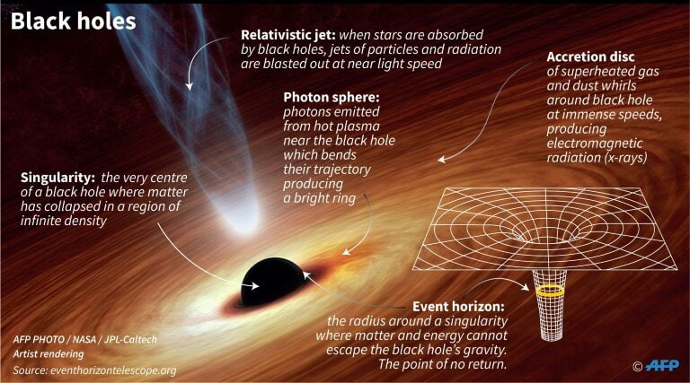

The Event Horizon Telescope has captured a historic first image of the supermassive black hole at the center of our galaxy.
The image, which was taken in the light of submillimeter radio waves, confirms that there is a black hole in the heart of the Milky Way that is feeding on a trickle of hydrogen gas.
"Until now, we didn't have the direct picture to prove that this gentle giant in the center of our galaxy is a black hole," Feryal Özel, an astrophysicist at the University of Arizona, said during a National Science Foundation news conference held Thursday (May 12). "It shows a bright ring surrounding the darkness, and the telltale sign of the shadow of the black hole."

Astronomers have unveiled the first image of the supermassive black hole at the centre of our own Milky Way galaxy. This result provides overwhelming evidence that the object is indeed a black hole and yields valuable clues about the workings of such giants, which are thought to reside at the centre of most galaxies. The image was produced by a global research team called the Event Horizon Telescope (EHT) Collaboration, using observations from a worldwide network of radio telescopes.
The image is a long-anticipated look at the massive object that sits at the very centre of our galaxy. Scientists had previously seen stars orbiting around something invisible, compact, and very massive at the centre of the Milky Way. This strongly suggested that this object — known as Sagittarius A* (Sgr A*, pronounced "sadge-ay-star") — is a black hole, and today’s image provides the first direct visual evidence of it.
Although we cannot see the black hole itself, because it is completely dark, glowing gas around it reveals a telltale signature: a dark central region (called a “shadow”) surrounded by a bright ring-like structure. The new view captures light bent by the powerful gravity of the black hole, which is four million times more massive than our Sun.
“We were stunned by how well the size of the ring agreed with predictions from Einstein’s Theory of General Relativity," said EHT Project Scientist Geoffrey Bower from the Institute of Astronomy and Astrophysics, Academia Sinica, Taipei. "These unprecedented observations have greatly improved our understanding of what happens at the very centre of our galaxy, and offer new insights on how these giant black holes interact with their surroundings.” The EHT team's results are being published today in a special issue of The Astrophysical Journal Letters.
Because the black hole is about 27,000 light-years away from Earth, it appears to us to have about the same size in the sky as a donut on the Moon. To image it, the team created the powerful EHT, which linked together eight existing radio observatories across the planet to form a single “Earth-sized” virtual telescope. The EHT observed Sgr A* on multiple nights, collecting data for many hours in a row, similar to using a long exposure time on a camera.

Sagittarius A* (/ˈeɪ stɑːr/ AY star), abbreviated Sgr A* (/ˈsædʒ ˈeɪ stɑːr/ SAJ AY star), is the supermassive black hole at the Galactic Center of the Milky Way. It is located near the border of the constellations Sagittarius and Scorpius, about 5.6° south of the ecliptic, visually close to the Butterfly Cluster (M6) and Lambda Scorpii.
The object is a bright and very compact astronomical radio source. The name Sagittarius A* follows from historical reasons; In 1954,[8] John D. Kraus, Hsien-Ching Ko, and Sean Matt listed the radio sources they identified with the Ohio State University radio telescope at 250 MHz. The sources were arranged by constellation and the letter assigned to them was arbitrary, with A denoting the brightest radio source within the constellation. The asterisk * is because its discovery was considered "exciting", in parallel with the nomenclature for excited state atoms which are denoted with an asterisk (e.g. the excited state of Helium would be He*). The asterisk was assigned in 1982 by Robert L. Brown, who understood that the strongest radio emission from the center of the galaxy appeared to be due to a compact nonthermal radio object.

A black hole is a region of spacetime with such tremendous gravity that nothing, not even light or other electromagnetic waves, can escape its event horizon. According to general relativity theory, a sufficiently compact mass may bend spacetime and generate a black hole. The event horizon is the point beyond which there is no escape. Although it has a significant impact on the fate and circumstances of an item passing through it, general relativity states that it has no locally visible properties. A black hole is similar to an ideal black body in many aspects since it does not reflect light. Furthermore, in curved spacetime, quantum field theory predicts that event horizons produce Hawking radiation with the same spectrum as a black body with a temperature inversely proportional to its mass. A black hole comes from the death of a large star (at least 10 times bigger than our Sun) exploding at the end of its life in a supernova. The Sun, being too small, won't ever become a black hole, it will expand, contract and cool off in its death process.
The idea of an object in space so massive and dense that light could not escape it has been around for centuries. Most famously, black holes were predicted by Einstein's theory of general relativity, which showed that when a massive star dies, it leaves behind a small, dense remnant core. If the core's mass is more than about three times the mass of the Sun, the equations showed, the force of gravity overwhelms all other forces and produces a black hole.
Scientists can't directly observe black holes with telescopes that detect x-rays, light, or other forms of electromagnetic radiation. We can, however, infer the presence of black holes and study them by detecting their effect on other matter nearby. If a black hole passes through a cloud of interstellar matter, for example, it will draw matter inward in a process known as accretion. A similar process can occur if a normal star passes close to a black hole. In this case, the black hole can tear the star apart as it pulls it toward itself. As the attracted matter accelerates and heats up, it emits x-rays that radiate into space. Recent discoveries offer some tantalizing evidence that black holes have a dramatic influence on the neighborhoods around them - emitting powerful gamma ray bursts, devouring nearby stars, and spurring the growth of new stars in some areas while stalling it in others.

Stellar-mass black holes are typically in the range of 10 to 100 solar masses, while the supermassive black holes at the centers of galaxies can be millions or billions of solar masses. The supermassive black hole at the center of the Milky Way, Sagittarius A*, is 4.3 million solar masses.This is the only black hole whose mass has been measured directly by observing the full orbit of a circling star. Black holes grow by accreting surrounding matter and by merging with other black holes.

1. You Can’t Directly See a Black Hole.
A black hole is called a black hole because of it’s color, especially since light can’t escape. What we can see, though, is the effects of a black hole. Analyzing the surrounding area of a black hole, we can see its effects upon its environment. For example, a star that’s close enough to a black hole can be seen being ripped apart.
2. Our Milky Way Probably Has a Black Hole.
But, don’t be alarmed, Earth isn’t in danger! The major black hole that astronomists believe to be within our Milky Way is light years away from Earth.
3. Dying Stars Lead to Stellar Black Holes.
The death of large stars lead to black holes, because a star’s gravity will overwhelm the star’s natural pressure that it maintains to keep its shape. When the pressure from the nuclear reactions collapses, gravity overwhelms and collapses the star’s core, and the star’s other layers are thrown off into space, and this process is also known as a supernova. The remainder of the core collapses, a spot overcome by density and without volume – a black hole.
4. There are Three Categories of Black Holes.
1) Primordial Black holes – These are the smallest of black holes and range from an atom’s size to a mountain’s mass.
2) Stellar Black Holes – These are the most common of black holes and they can be up to 20 times more massive than the Sun. There are also a variety of these all over the Milky Way.
3) Supermassive Black Holes – These are the largest of black holes, being more than 1 million times more massive than the Sun.
5. Black Holes Are Funky.
Say someone falls into a black hole and there’s an observer that witnesses this. The person who fell into the black hole’s time slows down, relative to the person watching. This is explained by Einstein’s Theory of General Relativity, which states that time is affected by how fast you are going when you’re at extreme speeds close to light.
6. The First Black Hole Wasn’t Discovered Until X-Ray Astronomy was Used.
Cygnus X-1 was the first black hole discovered in the 1960’s, and it’s 10 times more massive than the Sun.
7. The Closest Black Hole is Probably Not 1,600 Light-Years Away.
V4647 Sagitarii was thought to be 1,600 light-years away, but is further away than expected. Scientists now believe that this black hole is about 20,000 light years away.
8. We Don’t Know if Wormholes Exist.
We don’t know if this event exists, since we don’t know too much about physics, but that also means that anything may be possible.
9. Black Holes Are Only Dangerous if You Get Too Close.
Black holes are safe to observe from a lengthy distance, but not if you get too close, which also means that it’s unlikely for a black hole to consume an entire universe.
10. Black Holes Are Constantly Used in Science Fiction.
There are a multitude of black holes portrayals in science fiction. Many examples include:Interstellar, Event Horizon, Star Trek, Battlestar Galactica, Treasure Island, Superman: The Animated Series, Transformers.